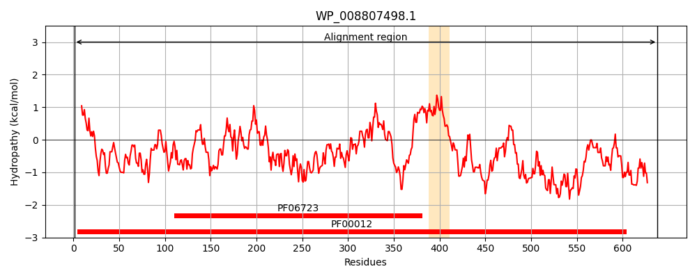
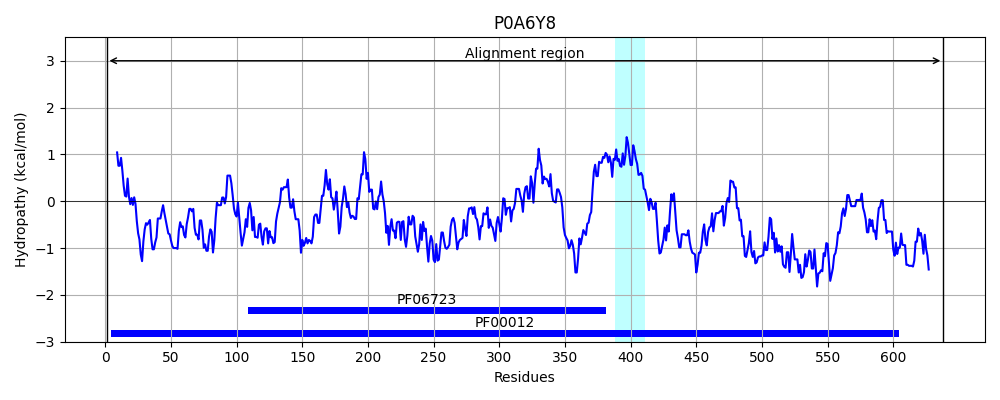
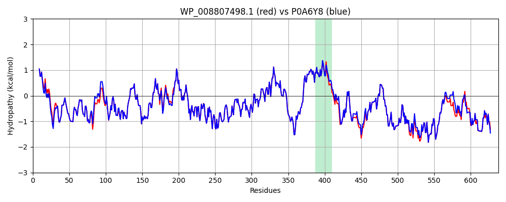

Hit Accession: P0A6Y8
Hit TCID: 1.A.33.1.2
Hit Description: gnl|BL_ORD_ID|8605 gnl|TC-DB|P0A6Y8|1.A.33.1.2 Chaperone protein dnaK - Escherichia coli.
Mach Len: 638
e:0.000000
Query TMS Count : 1
Hit TMS Count: 1
TMS-Overlap Score: 1.200000
Predicted Substrates:CHEBI:24870;ion
BLAST Alignment:
Score: 3071 , Bit scores: 1187 bits, E-value: 0.0e+00, Alignment length: 638, Percentage identity: 96
Query: 1 MGKIIGIDLGTTNSCVAIMDGTTARVLENAEGDRTTPSIIAYTQDGETLVGQPAKRQAVTNPQNTLFAIKRLIGRRFQDEEVQRDVSIMPYKIVAADNGDAWLDVKGTKTAPPQISAEVLKKMKKTAEDYLGEPVTEAVITVPAYFNDAQRQATKDAGRIAGLEVKRIINEPTAAALAYGLDKEVGNRTIAVYDLGGGTFDISIIEIDEVDGEKTFEVLATNGDTHLGGEDFDTRLINYLVDEFKKDQGIDLRNDPLAMQRLKEAAEKAKIELSSAQQTDVNLPYITADATGPKHMNIKVTRAKLESLVEDLVNRSIEPLKVALQDAGLSVSDINDVILVGGQTRMPMVQKKVAEFFGKEPRKDVNPDEAVAIGAAVQGGVLTGDVKDVLLLDVTPLSLGIETMGGVMTALINKNTTIPTKHSQVFSTAEDNQSAVTIHVLQGERKRASDNKSLGQFNLDGINPAPRGMPQIEVTFDIDADGILHVSAKDKNSGKEQKITIKASSGLNEEEIQKMVREAEANAESDRKFEELVQTRNQGDHLLHSTRKQVEEAGDKLPADDKTAIESALTALETSLKGEDKADIEAKMQALAQASQKLMEIAQQQHAQQQAGSADAQASNAKDDDVVDAEFEEVKDKK 638
MGKIIGIDLGTTNSCVAIMDGTT RVLENAEGDRTTPSIIAYTQDGETLVGQPAKRQAVTNPQNTLFAIKRLIGRRFQDEEVQRDVSIMP+KI+AADNGDAW++VKG K APPQISAEVLKKMKKTAEDYLGEPVTEAVITVPAYFNDAQRQATKDAGRIAGLEVKRIINEPTAAALAYGLDK GNRTIAVYDLGGGTFDISIIEIDEVDGEKTFEVLATNGDTHLGGEDFD+RLINYLV+EFKKDQGIDLRNDPLAMQRLKEAAEKAKIELSSAQQTDVNLPYITADATGPKHMNIKVTRAKLESLVEDLVNRSIEPLKVALQDAGLSVSDI+DVILVGGQTRMPMVQKKVAEFFGKEPRKDVNPDEAVAIGAAVQGGVLTGDVKDVLLLDVTPLSLGIETMGGVMT LI KNTTIPTKHSQVFSTAEDNQSAVTIHVLQGERKRA+DNKSLGQFNLDGINPAPRGMPQIEVTFDIDADGILHVSAKDKNSGKEQKITIKASSGLNE+EIQKMVR+AEANAE+DRKFEELVQTRNQGDHLLHSTRKQVEEAGDKLPADDKTAIESALTALET+LKGEDKA IEAKMQ LAQ SQKLMEIAQQQHAQQQ ADA A+NAKDDDVVDAEFEEVKDKK
Sbjct: 1 MGKIIGIDLGTTNSCVAIMDGTTPRVLENAEGDRTTPSIIAYTQDGETLVGQPAKRQAVTNPQNTLFAIKRLIGRRFQDEEVQRDVSIMPFKIIAADNGDAWVEVKGQKMAPPQISAEVLKKMKKTAEDYLGEPVTEAVITVPAYFNDAQRQATKDAGRIAGLEVKRIINEPTAAALAYGLDKGTGNRTIAVYDLGGGTFDISIIEIDEVDGEKTFEVLATNGDTHLGGEDFDSRLINYLVEEFKKDQGIDLRNDPLAMQRLKEAAEKAKIELSSAQQTDVNLPYITADATGPKHMNIKVTRAKLESLVEDLVNRSIEPLKVALQDAGLSVSDIDDVILVGGQTRMPMVQKKVAEFFGKEPRKDVNPDEAVAIGAAVQGGVLTGDVKDVLLLDVTPLSLGIETMGGVMTTLIAKNTTIPTKHSQVFSTAEDNQSAVTIHVLQGERKRAADNKSLGQFNLDGINPAPRGMPQIEVTFDIDADGILHVSAKDKNSGKEQKITIKASSGLNEDEIQKMVRDAEANAEADRKFEELVQTRNQGDHLLHSTRKQVEEAGDKLPADDKTAIESALTALETALKGEDKAAIEAKMQELAQVSQKLMEIAQQQHAQQQTAGADASANNAKDDDVVDAEFEEVKDKK 638 | Protein Hydropathy Plots: |
|---|
|  |  |
Pairwise Alignment-Hydropathy Plot:
|
|---|
|  |